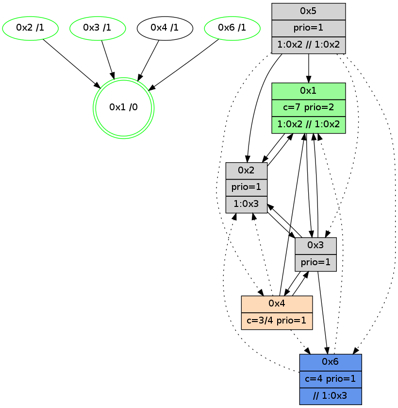

>> << IDX [start] -100 -25 -5 +0 +5 +25 +100 [895.29439497]
 Previous packets
----------------------------------------------------------------------
890.373314 beacon01(adaf) #0 coord=01,02,05,03,04,06 cycle=432.0ms assoc
-- color-indic=1 64 21 4f
890.383276 beacon02(adaf) #0 coord=01,02,05,03,04,06 cycle=432.0ms assoc 64 70 b0
890.393275 beacon05(adaf) #0 coord=01,02,05,03,04,06 cycle=432.0ms assoc 64 d6 9a
890.403277 beacon03(adaf) #0 coord=01,02,05,03,04,06 cycle=432.0ms assoc 64 4a be
890.413276 beacon04(adaf) #0 coord=01,02,05,03,04,06 cycle=432.0ms assoc 64 ec 94
890.423277 beacon06(adaf) #0 coord=01,02,05,03,04,06 cycle=432.0ms assoc 64 98 88
890.434838 [STC(4)->1 #0.102 new-neigh,tree-change,inconsistent-stability,to-color d=1]
890.439460 [Color(1) seq=121 @0:0 prio=2 >1.@2,1.@3,1.@5 >>2.@1,1.@3 c=1,4,6;0,2,3,5]
890.441252 [Color(2) seq=93 @0:0 prio=1 >2.@1,1.@3 c=4;0,1,2,5,6]
890.445470 [STC(3)->1 #0.102 new-neigh,tree-change,inconsistent-stability,stable,to-color d=1]
890.447753 [Color(3) seq=79 @0:0 prio=1 c=4;0,1,2,5,6]
----------------------------------------------------------------------
890.865422 beacon01(adaf) #0 coord=01,02,05,03,04,06 cycle=432.0ms assoc
-- color-indic=1 64 6d ff
890.875382 beacon02(adaf) #0 coord=01,02,05,03,04,06 cycle=432.0ms assoc 64 3c 00
890.885384 beacon05(adaf) #0 coord=01,02,05,03,04,06 cycle=432.0ms assoc 64 9a 2a
890.895383 beacon03(adaf) #0 coord=01,02,05,03,04,06 cycle=432.0ms assoc 64 06 0e
890.905383 beacon04(adaf) #0 coord=01,02,05,03,04,06 cycle=432.0ms assoc 64 a0 24
890.915385 beacon06(adaf) #0 coord=01,02,05,03,04,06 cycle=432.0ms assoc 64 d4 38
890.926285 [Hello(1): seq=595 sym=2,3 sysInfo=hasWarning,coloring-mode-on,ColoringModeRequestCalled stat=2:10,6,4,1/3:1,3,1,0]
890.928692 [Color(5) seq=39 @0:0 prio=1 >2.@1,1.@2 >>2.@1,1.@2,1.@3 c=1;0,2,3,4,5,6]
890.930757 [Hello(4): seq=696 sym=1,3 asym=2 sysInfo=hasWarning stat=1:15,4,5,0/3:15,13,5,4/2:0,1,0,0]
----------------------------------------------------------------------
891.357529 beacon01(adaf) #0 coord=01,02,05,03,04,06 cycle=432.0ms assoc
-- color-indic=1 64 a9 90
891.367490 beacon02(adaf) #0 coord=01,02,05,03,04,06 cycle=432.0ms assoc 64 f8 6f
891.377491 beacon05(adaf) #0 coord=01,02,05,03,04,06 cycle=432.0ms assoc 64 5e 45
891.387491 beacon03(adaf) #0 coord=01,02,05,03,04,06 cycle=432.0ms assoc 64 c2 61
891.397491 beacon04(adaf) #0 coord=01,02,05,03,04,06 cycle=432.0ms assoc 64 64 4b
891.407491 beacon06(adaf) #0 coord=01,02,05,03,04,06 cycle=432.0ms assoc 64 10 57
891.419883 [Color(2) seq=94 @0:0 prio=1 >2.@1,1.@3 c=4;0,1,2,5,6]
891.421567 PARSE ERROR************************
Traceback (most recent call last):
File "PacketAnalysis.py", line 167, in showOperaPacket
structPacket = OperaPacketParse.parsePacket(rawPacket)
File "../../pkg-python/HipSens/Core/OperaPacketParse.py", line 461, in parsePacket
return parseHelloMessage(data)
File "../../pkg-python/HipSens/Core/OperaPacketParse.py", line 127, in parseHelloMessage
assert struct.calcsize("H")*len(neighAddrList) == len(linkList)
AssertionError
48 20 03 00 02 b6 00 02 02 08 06 00 04 00 01 00 02 00 53 04 00 02 00 00 4c 08 05 ad 04 01 10 36 01 10 4c de
891.423672 [Color(6) seq=122 @0:0 color=4 prio=1 >>1.@5 c=0,1,2,5,6;3]
891.425860 [Color(1) seq=122 @0:0 color=7 prio=2 >1.@2,1.@3,1.@5 >>1.@2,1.@3 c=1,4,6;0,2,3,5]
891.430088 [Color(3) seq=80 @0:0 prio=1 c=4;0,1,2,5,6]
----------------------------------------------------------------------
891.849640 beacon01(adaf) #0 coord=01,02,05,03,04,06 cycle=432.0ms assoc
-- color-indic=1 64 d1 3d
891.859600 beacon02(adaf) #0 coord=01,02,05,03,04,06 cycle=432.0ms assoc 64 80 c2
891.869601 beacon05(adaf) #0 coord=01,02,05,03,04,06 cycle=432.0ms assoc 64 26 e8
891.879601 beacon03(adaf) #0 coord=01,02,05,03,04,06 cycle=432.0ms assoc 64 ba cc
891.889601 beacon04(adaf) #0 coord=01,02,05,03,04,06 cycle=432.0ms assoc 64 1c e6
891.899602 beacon06(adaf) #0 coord=01,02,05,03,04,06 cycle=432.0ms assoc 64 68 fa
891.911297 [Hello(4): seq=697 sym=1,3 asym=2 sysInfo=hasWarning stat=1:15,5,5,0/3:0,14,5,4/2:0,1,0,0]
891.913776 [Hello(1): seq=596 sym=2,3 sysInfo=hasWarning,coloring-mode-on,ColoringModeRequestCalled stat=2:10,6,4,1/3:1,4,1,0]
----------------------------------------------------------------------
892.341748 beacon01(adaf) #0 coord=01,02,05,03,04,06 cycle=432.0ms assoc
-- color-indic=1 64 15 52
892.351711 beacon02(adaf) #0 coord=01,02,05,03,04,06 cycle=432.0ms assoc 64 44 ad
892.361710 beacon05(adaf) #0 coord=01,02,05,03,04,06 cycle=432.0ms assoc 64 e2 87
892.371709 beacon03(adaf) #0 coord=01,02,05,03,04,06 cycle=432.0ms assoc 64 7e a3
892.381711 beacon04(adaf) #0 coord=01,02,05,03,04,06 cycle=432.0ms assoc 64 d8 89
892.391711 beacon06(adaf) #0 coord=01,02,05,03,04,06 cycle=432.0ms assoc 64 ac 95
892.404111 [Color(2) seq=95 @0:0 prio=1 >1.@3 c=4,7;0,1,2,5,6]
892.405795 [Hello(3): seq=695 sym=6,4,1,2 sysInfo=hasWarning stat=6:14,10,5,0/4:1,0,4,0/1:7,3,0,1/2:0,1,1,0]
892.407850 [Color(6) seq=123 @0:0 color=4 prio=1 >>1.@3,1.@5 c=0,1,2,5,6,7;3]
892.409658 [STC(1) #0.103 new-neigh,tree-change,inconsistent-stability,stable,to-color d=0]
892.412241 [Color(1) seq=123 @0:0 color=7 prio=2 >1.@2,1.@3,1.@5 >>1.@2,1.@3 c=1,4,6;0,2,3,5]
892.414316 [Color(3) seq=81 @0:0 prio=1 c=4;0,1,2,5,6]
----------------------------------------------------------------------
892.833857 beacon01(adaf) #0 coord=01,02,05,03,04,06 cycle=432.0ms assoc
-- color-indic=1 64 59 e2
892.843818 beacon02(adaf) #0 coord=01,02,05,03,04,06 cycle=432.0ms assoc 64 08 1d
892.853818 beacon05(adaf) #0 coord=01,02,05,03,04,06 cycle=432.0ms assoc 64 ae 37
892.863818 beacon03(adaf) #0 coord=01,02,05,03,04,06 cycle=432.0ms assoc 64 32 13
892.873818 beacon04(adaf) #0 coord=01,02,05,03,04,06 cycle=432.0ms assoc 64 94 39
892.883819 beacon06(adaf) #0 coord=01,02,05,03,04,06 cycle=432.0ms assoc 64 e0 25
892.895761 [Hello(4): seq=698 sym=1,3 asym=2 sysInfo=hasWarning stat=1:0,6,6,0/3:1,15,5,4/2:0,1,0,0]
892.898848 [STC(4)->1 #0.103 new-neigh,tree-change,inconsistent-stability,to-color d=1]
892.901515 [Hello(6): seq=611 sym=3,1 asym=2 sysInfo=hasWarning,coloring-mode-on,ColoringModeIndicationCalled stat=3:7,3,4,0/1:1,12,4,1/2:0,0,0,0]
892.904210 [Hello(1): seq=597 sym=2,3 sysInfo=hasWarning,coloring-mode-on,ColoringModeRequestCalled stat=2:10,6,4,1/3:1,5,1,0]
892.913823 [STC(6)->1 #0.103 new-neigh,tree-change,inconsistent-stability,stable,to-color d=1]
892.917723 [TreeStatus(6)-.->1 #0.103 new-neigh,tree-change,inconsistent-stability,stable child=1]
----------------------------------------------------------------------
893.325964 beacon01(adaf) #0 coord=01,02,05,03,04,06 cycle=432.0ms assoc
-- color-indic=1 64 9d 8d
893.335925 beacon02(adaf) #0 coord=01,02,05,03,04,06 cycle=432.0ms assoc 64 cc 72
893.345927 beacon05(adaf) #0 coord=01,02,05,03,04,06 cycle=432.0ms assoc 64 6a 58
893.355925 beacon03(adaf) #0 coord=01,02,05,03,04,06 cycle=432.0ms assoc 64 f6 7c
893.365926 beacon04(adaf) #0 coord=01,02,05,03,04,06 cycle=432.0ms assoc 64 50 56
893.375926 beacon06(adaf) #0 coord=01,02,05,03,04,06 cycle=432.0ms assoc 64 24 4a
893.388319 [Color(2) seq=96 @0:0 prio=1 >1.@3 c=4,7;0,1,2,5,6]
893.390039 [Hello(3): seq=696 sym=6,4,1,2 sysInfo=hasWarning stat=6:15,10,6,1/4:2,0,4,0/1:8,3,0,1/2:0,1,2,0]
893.392011 [Color(1) seq=124 @0:0 color=7 prio=2 >1.@2,1.@3,1.@5 >>1.@2,1.@3 c=1,4,6;0,2,3,5]
893.393823 [Color(6) seq=124 @0:0 color=4 prio=1 >>1.@3,1.@5 c=0,1,2,5,6,7;3]
893.398561 [Color(3) seq=82 @0:0 prio=1 c=4;0,1,2,5,6]
----------------------------------------------------------------------
893.818072 beacon01(adaf) #0 coord=01,02,05,03,04,06 cycle=432.0ms assoc
-- color-indic=1 64 d0 8a
893.828032 beacon02(adaf) #0 coord=01,02,05,03,04,06 cycle=432.0ms assoc 64 81 75
893.838036 beacon05(adaf) #0 coord=01,02,05,03,04,06 cycle=432.0ms assoc 64 27 5f
893.848033 beacon03(adaf) #0 coord=01,02,05,03,04,06 cycle=432.0ms assoc 64 bb 7b
893.858032 beacon04(adaf) #0 coord=01,02,05,03,04,06 cycle=432.0ms assoc 64 1d 51
893.868035 beacon06(adaf) #0 coord=01,02,05,03,04,06 cycle=432.0ms assoc 64 69 4d
893.878866 [Hello(1): seq=598 sym=2,3 sysInfo=hasWarning,coloring-mode-on,ColoringModeRequestCalled stat=2:10,6,4,1/3:1,6,1,0]
893.881260 [Color(5) seq=42 @0:0 prio=1 >1.@2 >>1.@2,1.@3,1.@5 c=1,7;0,2,3,4,5,6]
893.883413 [Hello(4): seq=699 sym=1,3 asym=2,6 sysInfo=hasWarning stat=1:1,7,6,0/3:2,0,5,4/2:0,1,0,0/6:0,1,1,1]
----------------------------------------------------------------------
894.310179 beacon01(adaf) #0 coord=01,02,05,03,04,06 cycle=432.0ms assoc
-- color-indic=1 64 14 e5
894.320140 beacon02(adaf) #0 coord=01,02,05,03,04,06 cycle=432.0ms assoc 64 45 1a
894.330141 beacon05(adaf) #0 coord=01,02,05,03,04,06 cycle=432.0ms assoc 64 e3 30
894.340140 beacon03(adaf) #0 coord=01,02,05,03,04,06 cycle=432.0ms assoc 64 7f 14
894.350140 beacon04(adaf) #0 coord=01,02,05,03,04,06 cycle=432.0ms assoc 64 d9 3e
894.360141 beacon06(adaf) #0 coord=01,02,05,03,04,06 cycle=432.0ms assoc 64 ad 22
894.372531 [Color(2) seq=97 @0:0 prio=1 >1.@3 c=4,7;0,1,2,5,6]
894.374239 [Hello(3): seq=697 sym=6,4,1,2 sysInfo=hasWarning stat=6:0,10,6,1/4:2,0,4,0/1:9,3,0,1/2:0,1,2,0]
894.376298 [Color(6) seq=125 @0:0 color=4 prio=1 >>1.@3,1.@5 c=0,1,2,5,6,7;3]
894.379107 [Color(3) seq=83 @0:0 prio=1 c=4;0,1,2,5,6]
894.382048 [Color(1) seq=125 @0:0 color=7 prio=2 >1.@2,1.@3,1.@5 >>1.@2,1.@3 c=1,4,6;0,2,3,5]
----------------------------------------------------------------------
894.802287 beacon01(adaf) #0 coord=01,02,05,03,04,06 cycle=432.0ms assoc
-- color-indic=1 64 58 55
894.812248 beacon02(adaf) #0 coord=01,02,05,03,04,06 cycle=432.0ms assoc 64 09 aa
894.822247 beacon05(adaf) #0 coord=01,02,05,03,04,06 cycle=432.0ms assoc 64 af 80
894.832248 beacon03(adaf) #0 coord=01,02,05,03,04,06 cycle=432.0ms assoc 64 33 a4
894.842248 beacon04(adaf) #0 coord=01,02,05,03,04,06 cycle=432.0ms assoc 64 95 8e
894.852248 beacon06(adaf) #0 coord=01,02,05,03,04,06 cycle=432.0ms assoc 64 e1 92
894.863983 [Hello(4): seq=700 sym=1,3 asym=2,6 sysInfo=hasWarning stat=1:1,8,6,0/3:3,1,5,4/2:0,1,0,0/6:0,2,1,1]
894.867699 [Hello(6): seq=613 asym=2,1 sysInfo=hasWarning,coloring-mode-on,ColoringModeIndicationCalled stat=2:0,0,0,0/1:1,13,4,1]
894.874497 [Hello(1): seq=599 sym=2,3 sysInfo=hasWarning,coloring-mode-on,ColoringModeRequestCalled stat=2:11,6,4,1/3:1,6,1,0]
894.877689 [STC(1) #0.104 new-neigh,tree-change,inconsistent-stability,stable,to-color d=0]